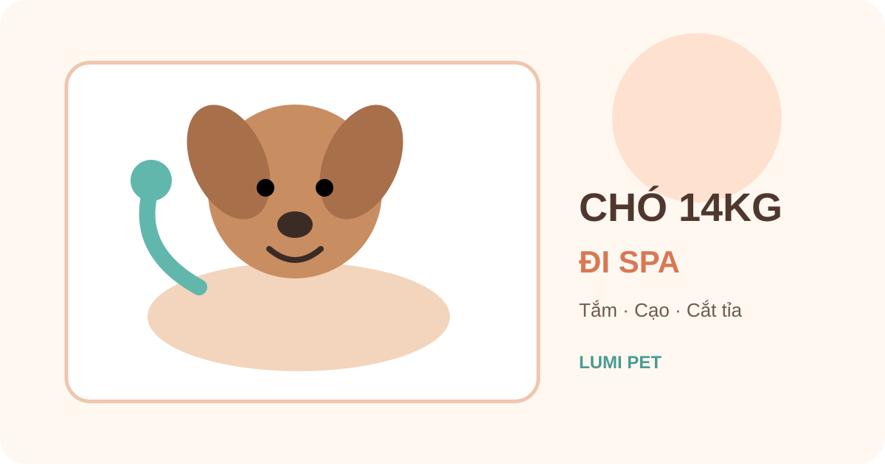

Chó 14kg đi Spa giá bao nhiêu? Tắm, cạo, cắt tỉa
Trả lời nhanh: chó 14kg tại Lumi Pet thuộc nhóm 12–18kg. Theo bảng giá hiện hành, tắm vệ sinh 350.000đ, tắm + cạo 460.000đ và tắm + cắt tỉa 550.000đ. Đây là giá cơ bản theo hạng cân; tình trạng lông hoặc yêu cầu ngoài gói cơ bản cần được xác nhận trước khi làm.

Bảng giá Spa cho chó 14kg tại Lumi Pet
Chó 14kg nằm trong hạng cân 12–18kg của bảng giá dịch vụ chó Lumi Pet. Vì vậy, mức giá cơ bản áp dụng theo từng gói như sau:
| Dịch vụ | Giá nhóm 12–18kg | Phù hợp khi |
|---|---|---|
| Tắm vệ sinh | 350.000đ | Cần làm sạch, vệ sinh và chăm sóc định kỳ |
| Tắm + cạo | 460.000đ | Có nhu cầu cạo và tình trạng lông phù hợp |
| Tắm + cắt tỉa | 550.000đ | Muốn chỉnh độ dài hoặc tạo form lông |
Chó 14kg nên chọn gói Spa nào?
Tắm vệ sinh: khi mục tiêu là làm sạch định kỳ
Nếu lông đang dễ quản lý, không cần đổi kiểu và mục tiêu chính là vệ sinh, gói tắm vệ sinh là lựa chọn trực tiếp nhất. Bạn có thể xem phạm vi dịch vụ tại Spa thú cưng Bình Thạnh và đối chiếu các hạng cân ở bảng giá Spa thú cưng.
Tắm + cắt tỉa: khi muốn chỉnh form
Nếu lông dài, mất dáng hoặc bạn muốn làm gọn theo một kiểu cụ thể, gói tắm + cắt tỉa phù hợp hơn. Khi đặt lịch, nên gửi ảnh bộ lông hiện tại và ảnh kiểu mong muốn để nhân viên hiểu rõ mục tiêu trước khi tiếp nhận.
Tắm + cạo: không nên chọn chỉ vì lông dài
Cạo lông không phải lựa chọn mặc định cho mọi chó 14kg. Loại lông, da và tình trạng thực tế mới là các yếu tố cần cân nhắc. Nếu chưa chắc, hãy mô tả giống chó và gửi ảnh khi đặt lịch Spa để được tư vấn trước.
4 thông tin nên gửi trước khi đặt lịch Spa cho chó 14kg
1. Cân nặng gần nhất
Nếu 14kg chỉ là số cân cũ hoặc ước lượng, nên cân lại gần ngày sử dụng dịch vụ. Điều này đặc biệt hữu ích khi cân nặng của bé đang gần ranh giới giữa các hạng giá.
2. Ảnh bộ lông hiện tại
Ảnh toàn thân cùng các vùng dễ rối như sau tai, nách, chân và bụng giúp việc tư vấn có thêm dữ liệu. Ảnh không thay thế kiểm tra trực tiếp nhưng giúp hạn chế hiểu nhầm về mức độ xử lý cần thiết.
3. Nhu cầu cụ thể
Hãy nói rõ bạn muốn tắm vệ sinh, cạo hay cắt tỉa. Với tạo kiểu, ảnh tham khảo thường hữu ích hơn những mô tả chung như “cắt gọn” hoặc “để đẹp”.
4. Những điểm bé nhạy cảm
Nếu bé sợ máy sấy, không thích chạm chân, khó đứng lâu hoặc từng căng thẳng khi grooming, nên báo trước. Thông tin này giúp nhân viên chuẩn bị cách tiếp nhận phù hợp hơn.
Khi nào giá cần được xác nhận thêm?
Ba mức giá trên là giá cơ bản của hạng 12–18kg. Nếu lông rối nhiều, cần xử lý ngoài gói hoặc chủ nuôi có yêu cầu đặc biệt, Lumi Pet cần đánh giá và xác nhận trước khi làm. Không nên tự suy ra một khoản phụ thu khi chưa có đánh giá thực tế.
Nếu bộ lông đang rối, bạn có thể xem thêm gỡ rối lông chó giá bao nhiêu. Nếu đang phân vân giữa cạo và vệ sinh thông thường, xem nên tắm vệ sinh hay tắm cạo cho chó.
14kg khác gì so với các mốc cân gần đó?
Trong bảng giá hiện hành, 13kg, 14kg và 15kg đều nằm trong nhóm 12–18kg nên cùng mức giá cơ bản cho ba gói nêu trên. Các bài theo mốc cân giúp người đang tìm đúng cân nặng của thú cưng nhận được câu trả lời nhanh; bảng giá tổng vẫn là nơi phù hợp nhất để đối chiếu toàn bộ các hạng.
Câu hỏi thường gặp
Chó 14kg tắm vệ sinh giá bao nhiêu?
Chó 14kg thuộc nhóm 12–18kg và tắm vệ sinh có giá cơ bản 350.000đ.
Tắm + cạo và tắm + cắt tỉa bao nhiêu?
Trong cùng nhóm 12–18kg, tắm + cạo là 460.000đ, còn tắm + cắt tỉa là 550.000đ.
Chó 14kg có bắt buộc phải cạo không?
Không. Cân nặng xác định hạng giá, còn lựa chọn cạo hay cắt tỉa phụ thuộc loại lông, tình trạng thực tế và mục tiêu chăm sóc.
Nếu chó 14kg bị rối lông thì sao?
Nên gửi ảnh trước và để nhân viên đánh giá. Nếu cần xử lý ngoài gói cơ bản, shop cần xác nhận trước khi thực hiện.
Muốn chốt đúng gói cho chó 14kg?
Gửi cân nặng gần nhất, ảnh bộ lông và nhu cầu của bé để Lumi Pet tư vấn trước khi làm.